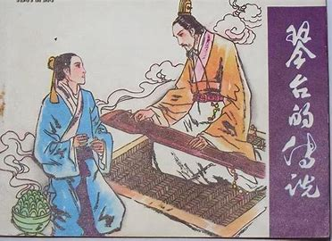
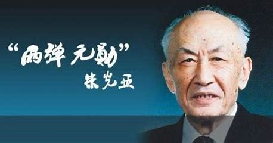
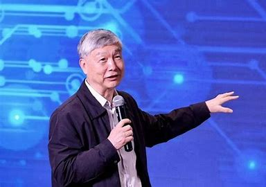

武汉名人 返回主页
1. 钟子期（前413年~前354年）
名徽，字子期，春秋战国时代楚国汉阳（今湖北省武汉市蔡甸区集贤村）人。
相传钟子期是一个戴斗笠、披蓑衣、背扁担、拿板斧的樵夫。历史上记载伯牙探亲回国时，在汉江边鼓琴，钟子期正巧遇见，感叹说：“巍巍乎若高山，洋洋乎若江河。”
因兴趣相投，两人就成了至交。钟子期死后，伯牙认为世上已无知音，终生不再鼓琴。这是“知音”一词的由来。
2.朱光亚
中国核科学事业的主要开拓者之一，吉林大学物理学创始人之一，“两弹一星功勋奖章”获得者，
入选“感动中国2011年度人物”，被誉为“中国工程科学界支柱性的科学家”、“中国科技众帅之帅”。
朱光亚1945年毕业于西南联合大学；1950年，获美国密执安大学博士学位；1980年，当选为中国科学院学部委员（院士）；
1996年5月，被推举为中国科协名誉主席；1999年1月，任总装备部科技委主任。20世纪50年代末，负责并组织领导中国原子弹、氢弹的研究、设计、制造与试验工作，参与领导了国家高技术研究发展计划的制订与实施、国防科学技术发展战略研究，为中国核科技事业和国防科技事业的发展作出了重大贡献。
1996年5月，被推举为中国科协名誉主席；1999年1月，任总装备部科技委主任。
20世纪50年代末，负责并组织领导中国原子弹、氢弹的研究、设计、制造与试验工作，参与领导了国家高技术研究发展计划的制订与实施、国防科学技术发展战略研究，为中国核科技事业和国防科技事业的发展作出了重大贡献。
3.李培根
机械制造及自动化专家，中国工程院院士，华中科技大学教授、博士生导师、原校长。
1977年从上海纺织工学院毕业后进入武汉轻工机械厂工作；1981年从华中工学院硕士研究生毕业后留校任教；1983年赴美留学；
1987年从美国威斯康星大学麦迪逊分校博士毕业后回国，继续在华中工学院机一系工作，先后担任讲师、副教授、教授、博士生导师；
1993年加入中国共产党；1995年至2002年担任华中理工大学机械学院院长；2002年至2005年担任华中科技大学副校长；
2003年当选为中国工程院院士；2005年至2014年担任华中科技大学校长。